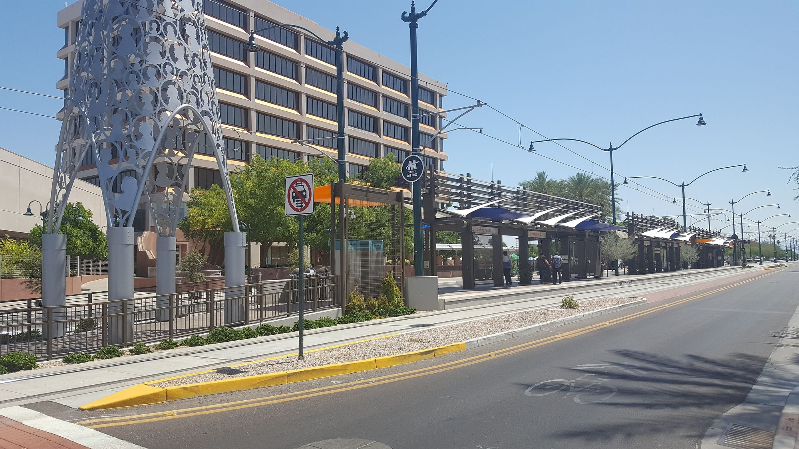

01

Mesa, Arizona
Every Mesa listing on ARMLS, and what to know about the city in the East Valley.
Mesa at a glance
Mesa hosts two spring training teams: the Chicago Cubs at Sloan Park and the Athletics at Hohokam Stadium.
Downtown, the city-owned Mesa Arts Center has four theaters, five galleries and 14 art studios, and Usery Mountain Regional Park covers 3,648 acres on the Valley's east side.
Saved searches
Each card opens a live search of ARMLS listings, updated as they change.
01

02

03

04
Photo: Gonzo fan2007, CC BY-SA 4.0
<!-- IDX_ZONE: homes-for-sale-mesa-az-feed -->
The newest Mesa listings in one compact row, six to eight homes. Builder places the IDX Broker hotsheet shortcode here in its compact layout.
The Chicago Cubs train at Sloan Park, opened in 2014 beside Riverview Park, and the Athletics at Hohokam Stadium, which first opened for them in 1977.
The city-owned Mesa Arts Center has four theaters, five galleries and 14 art studios in downtown Mesa.
Usery Mountain Regional Park covers 3,648 acres at the west end of the Goldfield Mountains, beside the Tonto National Forest, and includes the Wind Cave Trail.
Day to day
School information is factual and by district. Always confirm a specific address in the district's school finder.
Questions
The Chicago Cubs at Sloan Park and the Athletics at Hohokam Stadium.
The city-owned arts center in downtown Mesa, with four theaters, five galleries and 14 art studios.
3,648 acres at the west end of the Goldfield Mountains, beside the Tonto National Forest.
Mesa Public Schools serves most of the city. Confirm the schools for any address with the district.
Nearby
Photo: Scotwriter21, CC BY-SA 4.0
Photo: Visitor7, CC BY-SA 3.0

Photo: Tony the Marine, CC BY-SA 3.0
Resources
Photos marked on this page by Z Glyph (CC BY 3.0), Gonzo fan2007 (CC BY-SA 4.0), Cygnusloop99 (CC BY-SA 3.0), Scotwriter21 (CC BY-SA 4.0), Visitor7 (CC BY-SA 3.0), Tony the Marine (CC BY-SA 3.0), via Wikimedia Commons.